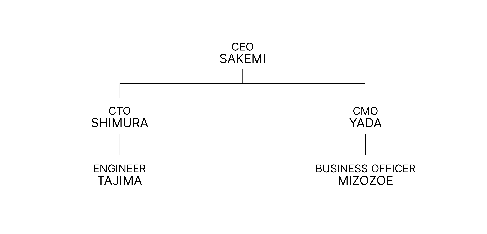

ABOUT US
私たちは、FRACING（F to the Racing/エフレーシング）です。
FRACINGは、久留米大学附設高等学校の高校生によって結成された、福岡県で初のSTEM Racingに挑戦するチームです。
私たちは、ただレースカーを速く走らせることだけを目指しているわけではありません。一台のマシンを完成させるために、高校生の枠を超えた多角的なアプローチを行っています。
● Engineering（工学） ── 設計、シミュレーション、製作、テスト
仮説を立て、実際に試し、得られた結果を次の設計へつなげる。試行錯誤を繰り返しながら、マシンの可能性を追求します。
● Business（ビジネス） ── マーケティング、スポンサー活動、チームのマネジメント
技術だけでは、挑戦を続けることはできません。自分たちの活動を自分たちの言葉で伝え、支えてくれる人々とつながり、チームそのものを成長させていきます。
考え、つくり、試し、学び、また挑戦する。
その積み重ねによって、一台のマシンだけでなく、チームそのものをつくっていく。
サーキットの上だけでなく、そのプロセスに転がるすべての経験と成長が、私たちFRACINGです。
We are FRACING (F to the Racing).
FRACING is a team formed by high school students at Kurume University Fusetsu High School, and we are the first team in Fukuoka Prefecture to take on the challenge of STEM racing.
Our goal is not simply to make our race car go fast. To build a complete machine, we take a multifaceted approach that goes beyond the scope of typical high school students.
● Engineering — Design, Simulation, Fabrication, Testing
We formulate hypotheses, test them in practice, and apply the results to our next design. Through repeated trial and error, we explore the full potential of our machine.
● Business — Marketing, Sponsorship Activities, Team Management
Technology alone is not enough to sustain our challenges. We communicate our activities in our own words, connect with those who support us, and foster the growth of the team itself.
We think, build, test, learn, and then challenge ourselves again.
Through this cumulative process, we build not just a single machine, but the team itself.
It is not just what happens on the racetrack, but all the experiences and growth woven into that process that define us as FRACING.
WHY FRACING
私たちのチーム名「FRACING」には、私たちがこの活動に懸けるさまざまな想いと挑戦の軌跡が詰め込まれています。その中心にあるのが、「F」という一文字です。
私たちにとって「F」は、固定された意味を持つ言葉ではありません。常に進化し、新しい価値を象徴し続ける文字です。その代表となる3つの柱を紹介します。
Our team name, “FRACING,” embodies the various aspirations we have for this endeavor and the journey of challenges we’ve undertaken. At its core lies a single letter: “F.”
For us, “F” is not a word with a fixed meaning. It is a letter that constantly evolves and continues to symbolize new values. Here, we introduce the three pillars that represent this.
Fusetsu（附設）
私たちの原点であり、共に学ぶ仲間が集う「久留米大学附設高等学校」
“Kurume University Fusetsu High School,” our starting point and the place where fellow students gather to learn together
Future（未来）
私たちが自らの手で、これから主体的に切り拓いていく「未来」
The “future” that we will proactively carve out with our own hands
Formula（フォーミュラ）
私たちが挑戦する「モータースポーツ」と、そこに広がる「技術・工学の世界」
The “motorsports” we take on and the “world of technology and engineering” that unfolds within it
「Racing」は、Fを無限に広げる指数
私たちは、この「F」に「Racing」を**指数（乗数）**として組み合わせました。
私たちにとってレース活動は、単なる成果を表現する舞台ではありません。レースカーを自分たちの手で設計し、つくり、走らせ、仲間と限界に挑む。その一つひとつの経験が、私たちに新しい知識や価値観を与え、「F」の持つ意味をさらに何倍にも大きく、深く成長させていきます。
「F」が表すものは、この3つだけに留まりません。これからの挑戦を通じて、私たちは新しい「F」の意味を自分たちで生み出し、加えていきます。
Fusetsuから始まり、Futureへ向かい、Formulaに挑む。
そして、Racingを通じてそのすべてをブーストさせていく。
それが、私たちの「FRACING」です。
“Racing” is the exponent that expands “F” infinitely.
We have combined this “F” with “Racing” as an **exponent (multiplier)**.
For us, racing is not merely a stage for showcasing results. We design, build, and drive our race cars with our own hands, pushing the limits alongside our teammates. Each of these experiences provides us with new knowledge and values, multiplying and deepening the meaning of “F” many times over.
What “F” represents is not limited to just these three things. Through our future challenges, we will create and add new meanings to “F” on our own.
Starting from Fusetsu, moving toward the Future, and taking on the Formula.
And through Racing, we will boost it all.
That is our “FRACING.”
SPEED IS BUILT.
私たちのCONCEPTは「SPEED IS BUILT.」です。
Our CONCEPT is “SPEED IS BUILT.”

私たちは、速さは一つの要素だけで生み出されるものではないと考えています。
マシンを生み出すEngineering、それを形にするManufacturing、一人ひとりの力を結集するTeamwork。
さらに、チームの存在や挑戦を社会へ伝えるMarketing、活動を支えてくださる方々との関係を築くSponsorshipなど。
FRACINGを構成する一つひとつの活動に向き合い、それぞれを高め、積み重ね、そして一つのチームとして機能させる。
私たちが追い求める速さは、どこかに与えられているものではありません。
一つひとつの挑戦と、その積み重ねによって、自ら築き上げていくものです。
SPEED IS BUILT.
速さは、築き上げるもの。
We believe that speed is not created by a single factor alone.
Engineering, which creates the machine; Manufacturing, which brings it to life; and Teamwork, which unites the strengths of each individual.
Furthermore, Marketing, which communicates the team’s existence and challenges to society; and Sponsorship, which builds relationships with those who support our activities.
We engage with each and every activity that makes up FRACING, enhancing and building upon each one to function as a single, cohesive team.
The speed we pursue is not something that is simply given to us.
It is something we build for ourselves through each individual challenge and the accumulation of those efforts.
SPEED IS BUILT.
CREATE VALUE FOR SOCIETY.
私たちのMISSIONは、「CREATE VALUE FOR SOCIETY.」です。
STEM Racingには、Engineering、Manufacturing、Marketing、Sponsorship、Team Managementなど、さまざまな分野があります。
私たちは、それぞれの分野に真剣に向き合い、ひとつひとつの分野で新たなVALUEを生み出すことを目指します。
そして、そこで生まれたVALUEを単独で終わらせるのではなく、互いに掛け合わせ、組み合わせる。
技術とアイデア。人と人とのつながり。ものづくりと発信。
異なる分野から生まれたVALUEを一つにすることで、そこからさらに新しいVALUEを生み出す。
私たちは、STEM Racingという一つの舞台で生まれるさまざまなValueを結びつけ、私たちだけでは生み出せなかった価値を社会へ届けることを目指します。
Create Value for Society.
それが、私たちFRACINGの使命です。
Our MISSION is “CREATE VALUE FOR SOCIETY.”
STEM Racing encompasses a variety of fields, including Engineering, Manufacturing, Marketing, Sponsorship, and Team Management.
We take each of these fields seriously and aim to create new VALUE in every single one.
And rather than letting the VALUE created in each field stand alone, we combine and integrate them.
Technology and ideas. Connections between people. Manufacturing and communication.
By uniting the value born from these different fields, we generate even more new value.
We aim to connect the diverse forms of value created on the single stage of STEM Racing and deliver value to society that we could not have created on our own.
Create Value for Society.
That is the mission of FRACING.
INSPIRE THE NEXT GENERATION.
私たちのVISIONは「INSPIRE THE NEXT GENERATION.」です。
私たちは、福岡県初のSTEM Racingチームとして、自分たちの挑戦を、次の世代の挑戦へつなげたい。
STEM Racingという一つの舞台で、考え、つくり、失敗し、学び、そして再び挑戦する。その過程そのものを発信し続けることで、誰かの好奇心を刺激し、新しい一歩を踏み出すきっかけを生み出します。
そして、私達自身も挑戦を続けることで、「自分には無理かもしれない」と思うことにもまず挑戦してみよう、という文化を広げていきます。
福岡から始まった私たちの挑戦が、次の挑戦者を生み、その挑戦がまた次の世代へつながっていく。
そんな挑戦の連鎖を、私たちはつくります。
Our VISION is “INSPIRE THE NEXT GENERATION.”
As Fukuoka Prefecture’s first STEM Racing team, we want to connect our own challenges to those of the next generation.
On the stage of STEM Racing, we think, create, fail, learn, and try again. By continuously sharing this process itself, we aim to spark curiosity in others and create opportunities for them to take a new step forward.
Furthermore, by continuing to take on challenges ourselves, we will foster a culture where people are encouraged to at least give things a try—even when they think, “Maybe I can’t do this.”
Our journey, which began in Fukuoka, will inspire the next generation of challengers, and their challenges will in turn lead to the next generation.
We are creating this chain of challenges.
MEMBERS

F RACING チームメンバー
F RACING Team Members